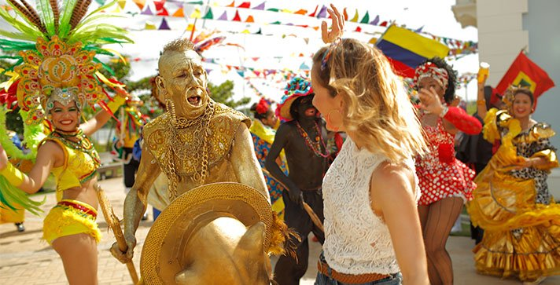
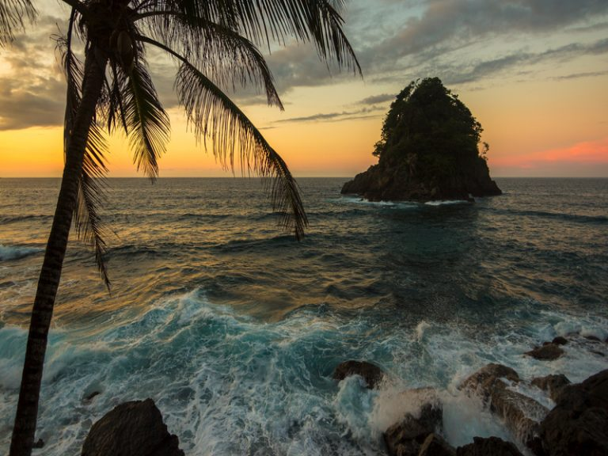

Santa Marta, Cartagena y la Isla de San Andrés Cada uno de estos lugares tiene cosas espectaculares por ofrecer, es por eso que ocupan el primer lugar en el ranking de búsquedas de Viajala. Lugares preferidos para vacacionar por su cálido clima, el aroma del mar, y las actividades acuáticas que ofrece.
No solo son sitios históricos de gran importancia, sino que también contienen paraísos naturales dignos de admirar, como sus islas aledañas, su deliciosa gastronomía característica del Caribe colombiano. En los meses de vacaciones se hicieron más de 94 mil búsquedas en Viajala para la ciudad de Santa Marta, siguiendo la ciudad de Cartagena con más de 83 mil y luego la Isla de San Andrés con más de 39 mil búsquedas.
La ciudad de las golondrinas Monteria
La ciudad de las golondrinas como la conocen algunos colombianos, es atractiva y de gran interés, no solo por su cercanía con la playa y el mar, sino también por ser una ciudad moderna con el ambiente cálido y acogedor, es elegida por ser una ciudad no tan llena de turistas como otras grandes urbes playeras.
No solo es atractiva por ser limpia, y porque desde hace unos años también promueven el turismo ecológico, sino también porque tiene todo lo que un viajero desea, muy buena gastronomía caribeña, digna de recordar, muy buenos planes turísticos, y un ambiente confortable para pasear por sus iglesias y parques.
Barranquilla
No, no estaban en carnaval, y aún así sigue siendo uno de los destinos favoritos de los viajeros. Con más de 28 mil búsquedas en Viajala, Barranquilla se posiciona como un gran atractivo turístico; debe ser por todo lo maravilloso que tiene por ofrecernos.
Su famoso tour gastronómico por el centro histórico de Barranquilla, el Museo del Caríbe y el Malecón, son solo algunas de las actividades que La Puerta del Oro, tiene por ofrecernos. Además, la ciudad tiene infinidad de atractivos ya que puedes elegir entre fiesta y vida nocturna, y también plan familiar, caminar por la ciudad que tiene unas casas de colores hermosas para tomar postales, y muchas actividades para familias que van con niños.

Capurganá
Además de ser un paraíso caribeño, Capurganá es un destino ecoturístico que ningún apasionado por la naturaleza se puede perder. Ubicado en el municipio de Acandí, en el departamento del Chocó, cerca de la frontera con Panamá, este lugar ofrece una variedad de atractivos turísticos así como de actividades llenas de naturaleza y aventura.
Aquí podrás realizar caminatas por sus bosques para apreciar la diversidad de flora y fauna, recorrer sus ríos y nadar en piscinas naturales de agua dulce, bucear y hacer snorkeling en sus arrecifes coralinos, y, por supuesto, desconectarte del mundo en sus playas de arenas blancas y aguas de diferentes tonos de azules.

Playas de Puerto Colombia
Entre las playas de Colombia, a tan solo 15 kilómetros de Barranquilla, se encuentra Puerto Colombia, lugar que ofrece playas del Caribe propicias para practicar surf, especialmente para los que buscan iniciarse en este deporte, debido a la profundidad y frecuencia del oleaje.
Las playas de Colombia de Prado Mar, ubicadas al lado del Malecón de Puerto Colombia, son populares por sus atardeceres y su oleaje tranquilo para practicar paddle, un deporte acuático que ha ido ganando adeptos a lo largo de los últimos años.
Aventura natural y cultural en la Guajira
El departamento de la Guajira ofrece mucho más que comunidades ancestrales, gastronomía étnica y riqueza artesanal. Aquí los visitantes tienen la oportunidad de vivir el extremo norte de Colombia y conocer sus playas y atardeceres exuberantes en todo su esplendor.
Viaje Galáctico Ancestral Colombia
La intensa fascinación de los pueblos indígenas por los astros fue el motor que forjó una idea según la cual la creación del cosmos es capaz de calmar la sed espiritual de trascendencia, por ello, te presentamos un Viaje Galáctico Ancestral por lugares místicos.
En medio de la espectacularidad natural que los ha rodeado a lo largo de su historia, estos pueblos atribuyeron a las estrellas, al sol y a la luna, cualidades divinas que luego se fueron mezclando con las características de los hermosos animales que veían y de los hombres sobresalientes de sus comunidades.
Tradiciones coloniales en Popayán
En la mayoría de ciudades encontrarás una plazoleta central y un diseño del centro histórico que está basado en las ciudades españolas. Cuando llegaron a Colombia, personajes como Gonzalo Jiménez de Quesada, Pedro de Heredia y Sebastián de Belalcázar fundaron asentamientos que conservaban la tradición de sus natales ciudades españolas.
El tradicional centro de Bogotá, Cartagena y Popayán (respectivamente) es el escenario perfecto para conocer cómo fue la llegada de europeos a Colombia, pero es en esta última ciudad en donde además encontrarás una de sus tradiciones más arraigadas: la Semana Santa.
San Basilio de Palenque: pieza clave en la historia de las negritudes
Con la llegada de los españoles, también llegaron esclavos africanos del Golfo de Guinea, muchos de ellos raptados. Sin embargo, no era sencillo hacerlos atravesar por las cercanías de Cartagena, específicamente por la desembocadura del Río Magdalena, pues una población se había revelado y convertido en el primer grupo de afro descendientes libres de todo el continente.
En San Basilio de Palenque aún se conservan tradiciones africanas. La alegría de su gente y las características históricas del lugar, así como la cultura única, que no encontrarás en otra parte del mundo, hicieron que el se convirtiera en Patrimonio Cultural Inmaterial de la Humanidad en el 2005